Đây là nơi mình post những build mà mình nghĩ ra/tìm ra và điều tra 🕵️. Sẽ cố gắng update theo patch mới nhất
Mục đích của trang này không phải để chỉ người đọc build nào đúng/sai, mà là để gợi cho mọi người suy nghĩ về 2 điều sau:
- Critical thinking - Tư duy phản biện: Mình không viết cái này để thay thế OPGG/blitz.gg/Mobalytics... Mình viết để khiến các bạn SUY NGHĨ. Suy nghĩ xem nó viết đúng hay sai, trong tình huống nào thì áp dụng được, còn tình huống nào thì phải làm khác đi.
- Intent - Ý định: Tất cả các build trong đây được xây dựng từ bản chất của tướng và cách vận hành tướng trong game, theo ý kiến chủ quan của mình. Tất nhiên, ý kiến của mình có thể đúng/sai, nhưng điều mình nhấn mạnh ở đây là ý định, thứ mình giải thích rất rõ trong từng build.
Không chỉ riêng việc chọn ngọc, mua đồ, tất cả hành động của mỗi người trong game (và ngoài đời :D) đều phải có nguyên nhân, kế hoạch đi kèm.
Người đọc có thể không đồng ý với tất cả mọi thứ được viết trong trang này. Tuy vậy, mình tin là ai đọc xong cũng sẽ học được 1 điều gì đó mới <3
LƯU Ý:
13.10 sẽ là 1 trong những bản lớn nhất từ trước đến giờ, thay đổi game hoàn toàn. Tất cả các build liên quan đến AD, hỗ trợ và sát thủ AD đều sẽ không còn chính xác. Mình sẽ chỉ cập nhật lại trang này sau khi đã hiểu rõ hết các thay đổi.
Một số thuật ngữ tiếng Anh:
MS (Movement speed): tốc độ di chuyển engage: mở giao tranh, lao vào,... battlemage: Các tướng pháp sư tầm ngắn, nhiều máu. VD: Ryze, Swain, Sylas, Cassiopeia,... burst: dồn dmg trong thời gian ngắn, thường hay dùng để phân biệt với DPS (dmg theo thời gian dài) AS: tốc độ đánh
Mục lục
Theorycrafting 13.10
Akali 13.8
Bảng ngọc
Ở đây mình dùng các bảng tiêu biểu thôi. Thực tế thì ngọc của Akali có nhiều chỗ tuỳ biến theo game, nên các bạn lấy bảng nào mình chơi tốt là được.
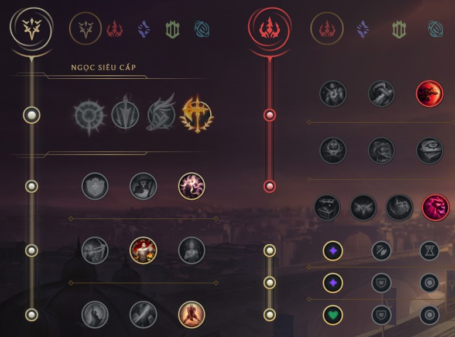
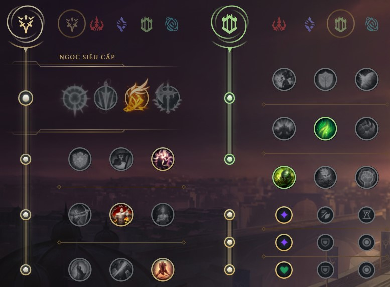
Item
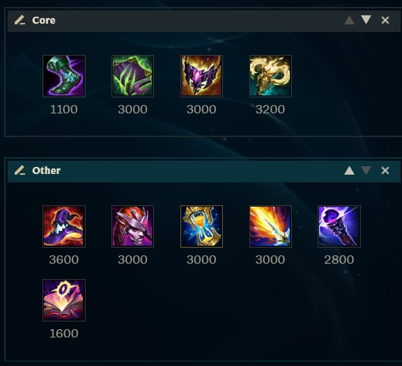
Mình không có vấn đề gì với các build hiện tại của Akali. Đây chỉ là ý tưởng của mình khi xem Akali đi lane.
Akali có base dmg cơ bản rất cao. Nếu đã từng đánh với Akali đi top, các bạn sẽ biết Akali có thừa dmg để solokill từ lv6 (nếu Akali trúng hết chiêu, và bạn không chơi tank).
Vào midgame, Akali cũng không cần quá nhiều AP để dứt điểm 1-2 người mỗi combat. Chính vì vậy, build của mình tập trung vào Xuyên kháng phép và các chỉ số tank.
Các core item trong hình cho Akali ~43 xuyên kháng phép, 1k HP, 30 giáp và kháng phép, giúp Akali vừa gần như gây sát thương chuẩn trên tướng yếu máu, vừa quá trâu để hạ gục trong combat.
Về cuối trận, có thể bổ sung thêm AP với Mũ Phù Thuỷ, Trượng Hư Vô hoặc mua thêm Đồng hồ cát, Mũ Trụ Nguyền Rủa để càng khó chết hơn.
Mình ưu tiên Ngọn đuốc thánh quang do đây là món đồ đỡ nhất trong 4 món tank. Tuỳ theo meta, chúng ta lựa món tank nào tốt nhất là được.
Annie 13.8
LCK là khu vực đầu tiên chơi Annie, và tất cả khu vực khác copy build Trượng Trường Sinh từ đây.
Mình rất ghét build này, vì nó biến Annie thành Battlemage, lối chơi không phù hợp và chưa bao giờ xuất hiện trên Annie trong các mùa trước.
Bảng ngọc
2 bảng tương ứng với 2 cách lên đồ được giải thích ngay bên dưới.
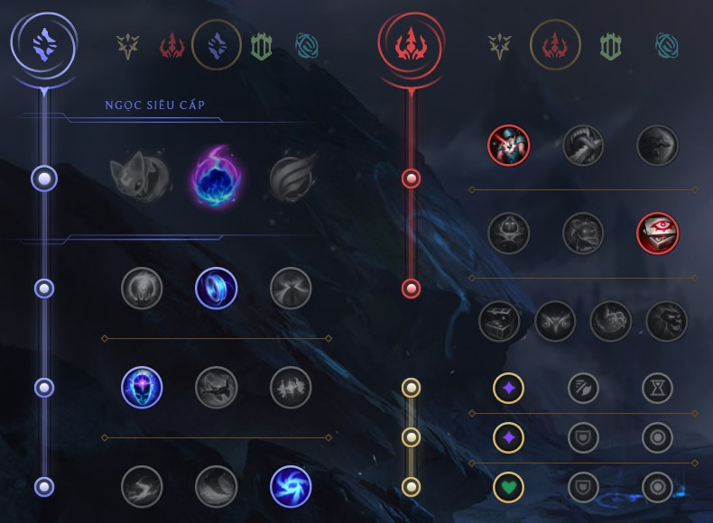
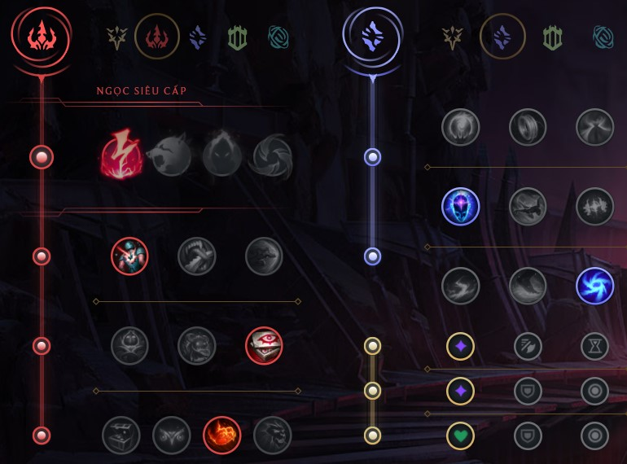
Item
Permaburn
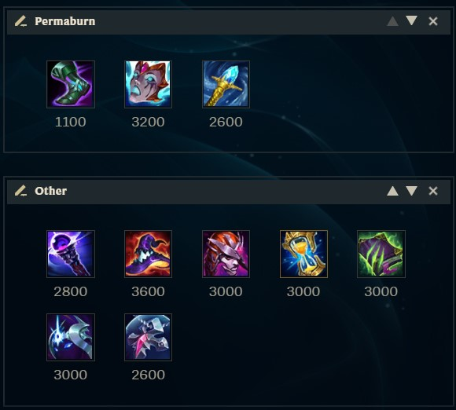
Dùng cho các đội hình nhiều máu, không thể burst. Aura của Tibbers làm chậm tất cả kẻ địch xung quanh, và Tibbers liên tục apply Liandry, Thiên thạch Bí ẩn, Phát bắn đơn giản trên tất cả các tướng đứng xung quanh. Tibbers gây dmg liên tục khiến Thiên thạch Bí ẩn hồi chiêu rất nhanh, kích hoạt càng nhiều thiên thạch hơn.
Burst
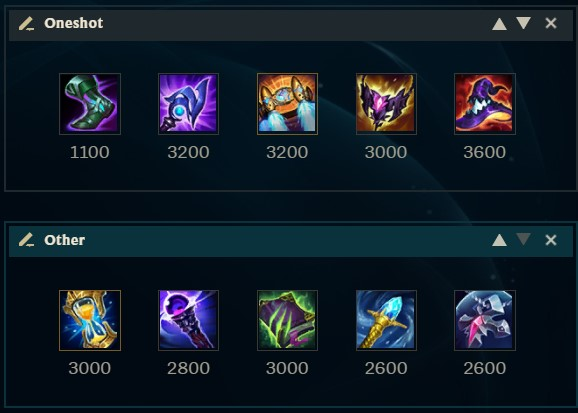
Đơn giản là mua nhiều AP/xuyên kháng phép nhất có thể để combo ám sát. Nếu bạn biết cách kiểm soát mana, có thể thay thế Luden bằng Đai tên lửa Hextech để dễ engage hơn, tạo yếu tố bất ngờ. Đương nhiên, build này hoạt động tốt nhất với các tướng yếu máu. Thay Sốc điện bằng Thú săn mồi khi cần thêm MS để engage.
Luôn luôn mua Giày Pháp sư !!!. Annie không quan tâm, không sử dụng hiệu quả được giày nào khác.
Bel'Veth Support 13.9
Bel'Veth hiện tại hoàn toàn có thể chơi ở vị trí hỗ trợ. Ở bản 13.10, Bel'Veth hỗ trợ sẽ càng mạnh hơn.
Bảng ngọc
Ở vị trí hỗ trợ, luôn luôn lấy Sãn sàng tấn công để tăng dmg cho cả bản thân và AD. Có thể đổi sang Giáp cốt nếu muốn chơi theo kiểu all-in.
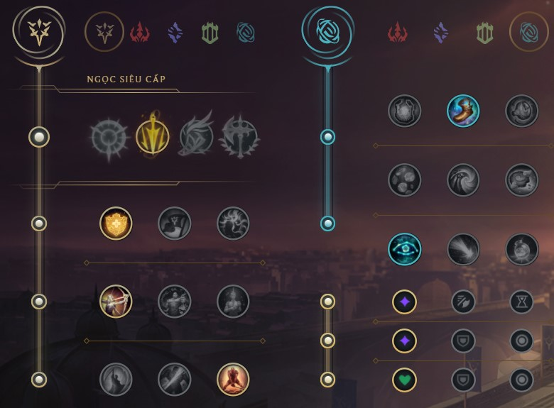
Item
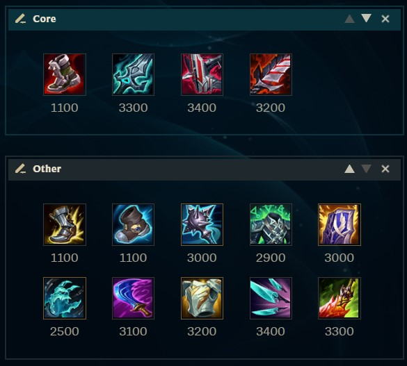
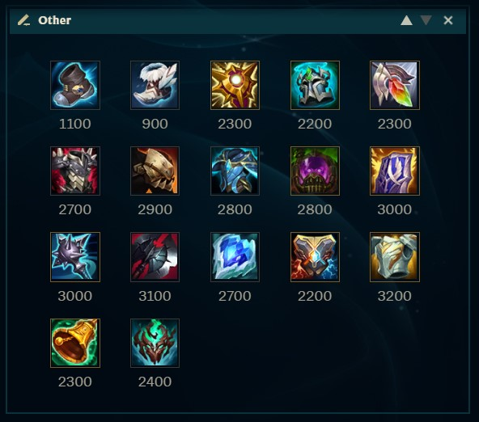
Vai trò của Bel'Veth ở vị trí hỗ trợ là sử dụng khả năng cơ động của mình để mở giao tranh bằng W, hút sát thương với E và thoát ra ngoài. Độ cơ động là sự khác biệt lớn nhất giữa Bel'Veth hỗ trợ so với Leona, Nautilus, Thresh,...
90% game lên Giáp vai Nguyệt thần, mua Solari chỉ khi có giá trị counter các tướng đối phương (Ví dụ: Karthus, Gankplank, Fiddlesticks,...).
Ưu tiên các món tốc độ chạy sau đồ thần thoại. Nếu quá xanh trong giai đoạn đi lane, có thể lên Rìu đen để bổ sung thêm dmg cho team.
Chogath Battlemage 13.8
Một trong số ít tướng có khả năng Quadra flex.
Bảng ngọc
Thú săn mồi là cách để engage trên các tướng đánh xa. Combo Thú săn mồi + Trượng băng vĩnh cửu sẽ cho bạn rất nhiều cơ hội solokill.
Có thể đổi hàng dưới cùng thành Thợ săn tối thượng
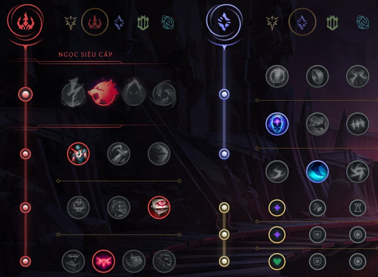
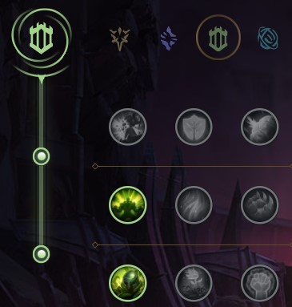
Nếu đối phương có nhiều melee, chuyển sang dùng Mưa kiếm để dồn dmg bằng E.
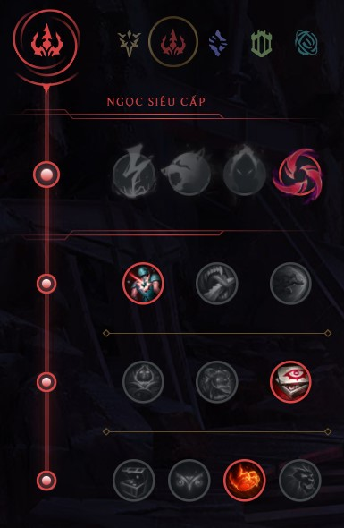
Khoảng 1 tháng trước, Gumayusi có chơi Cho'gath đường dưới bằng Thiên thạch Bí ẩn. Nghe có vẻ hợp lý, nhưng thực sự rất troll, vì Thiên thạch không có giá trị gì trong lane và sau early game.
Item
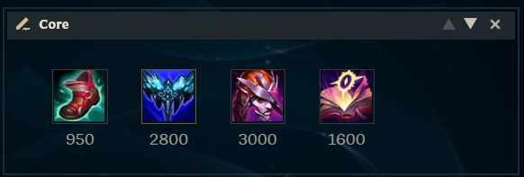
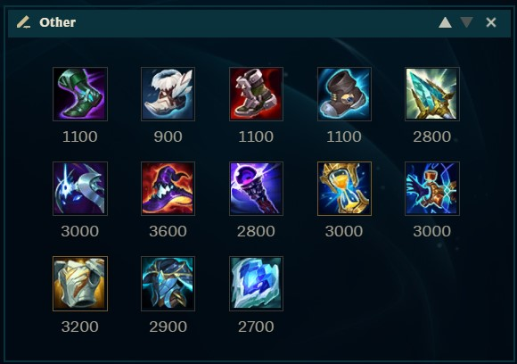
Trượng băng vĩnh cửu: Setup cho Q để solokill tướng yếu máu. Lưu ý tầm sử dụng không quá dài, nên nếu gặp nhiều tướng đánh xa thì nên kết hợp Thú săn mồi. Trượng trường sinh: Đáng cân nhắc nếu team mình không có quá nhiều tank. Bạn sẽ là mục tiêu số một do kích cỡ tướng lớn và rất chậm. Lên kèm với các món tank, đặc biệt là Thú tượng thạch giáp. Kính ngắm ma pháp: Item này tăng dmg cho cả sát thương chuẩn.
Hecarim 13.10
Bảng ngọc
Quan điểm cá nhân của mình là không nên lấy Tăng tốc pha do Hecarim cần ưu tiên dmg.
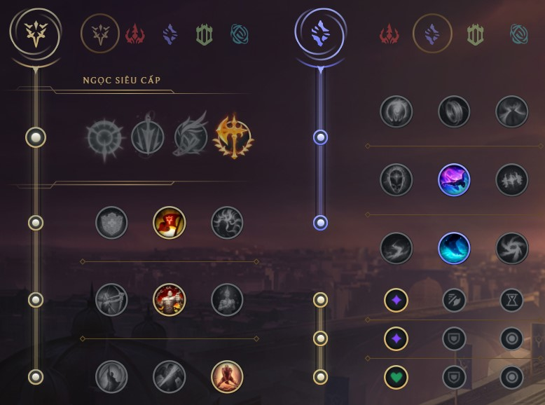
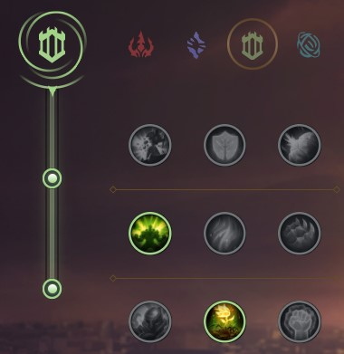
Item
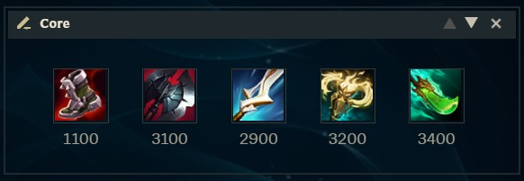
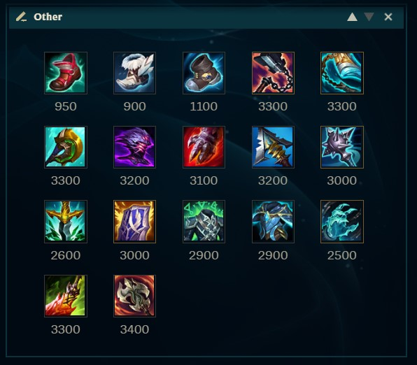
Mình nghĩ không cần giải thích quá nhiều về Rìu đen. Hecarim cần một món dmg nữa để khai thác nội tại giảm giáp, và Manamune theo mình là lựa chọn tốt nhất. Các lựa chọn đồ thần thoại gồm:
- Giáp vai nguyệt thần: Đồ tank hiện tại quá yếu và không đáng để lên (Jak'sho, Ngọn đuốc thánh quang). Giáp vai nguyệt thần vừa được giảm giá xuống 2300g ở phiên bản này.
- Chuỳ hấp huyết: counter sát thủ
- Chuỳ phản kích: giữ chân các tướng carry cơ động thấp (Ashe, Jinx, Aphelios,...)
- Búa rìu sát thần: cần thêm dmg giết tank
Udyr 13.10
Udyr có 2 lối chơi chính là max R (Phượng hoàng) và max Q (Gấu). Bài này sẽ cố gắng phân tích cả 2 lối chơi, nhiều ý tưởng đến từ streamer Aribo (EUW).
Bảng ngọc
Udyr có lối chơi khá tương đồng với Hecarim nên cũng có bảng ngọc khá giống.
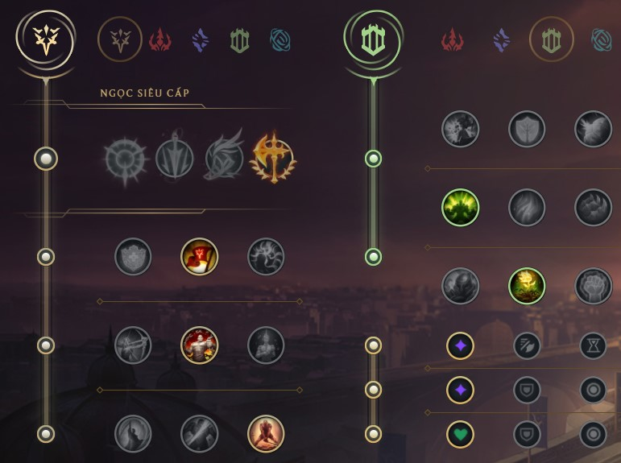
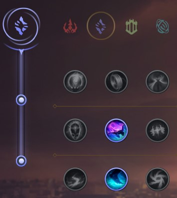
Đối với Udyr top, có thể sử dụng Sẵn sàng tấn công để hỗ trợ burst cho Gấu, hoặc Quyền năng bất diệt khi build tank Phượng hoàng.
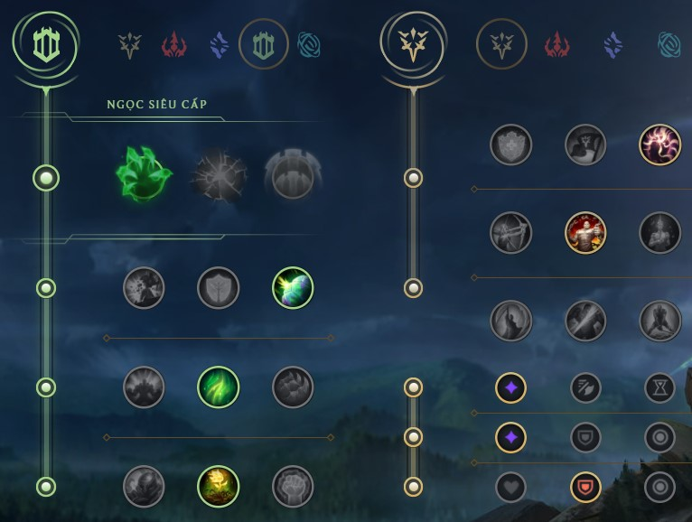
Item
Phượng hoàng
AOE và làm chậm xung quanh, thích hợp cho các game thiếu AP hoặc có nhiều melee.
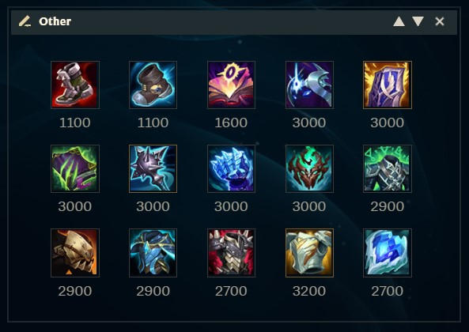
Giày bạc: Do lối chơi của Udyr, MS là một trong những chỉ số quan trọng nhất. Chỉ nên đổi sang Giày thép gai hoặc Giày thuỷ ngân trong những game thực sự có tác dụng lớn.
Nên mua Phong ấn hắc ám để có cơ hội nâng cấp thành Mejai. Mejai không chỉ có AP mà còn cho 100 HP và 10% MS cộng thêm, tất cả chỉ với 1600g. Mũ trụ nguyền rủa: Core item trong các build lên đồ thần thoại tank. Hãy nhớ, đối với Udyr, AP không chỉ là dmg mà còn là chống chịu thông qua lớp khiên W, và chúng ta luôn max W 2nd. Lượng dmg từ item này giúp Udyr clear rừng và solo rồng, sứ giả nhanh hơn nhiều. Đặc biệt, từ sau khi được rework, Udyr có thể kích hoạt nâng cấp R (skill nhiều dmg nhất) từ khoảng cách rất xa. Giáp vai nguyệt thần: Đồ tank hiện tại quá yếu và không đáng để lên (Jak'sho, Ngọn đuốc thánh quang). Giáp vai nguyệt thần vừa được giảm giá xuống 2300g ở phiên bản này.
Ở phiên bản 13.7, Động cơ vũ trụ vừa được buff. Đây là một món đồ khá phù hợp cho Udyr, giúp bắt kịp các tướng đánh xa.
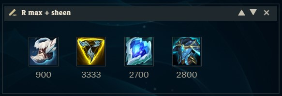
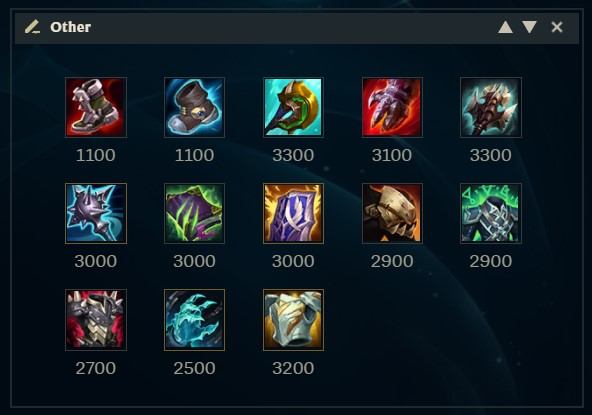
Điểm yếu lớn nhất của lối lên đồ ở trên là có 2 core item. Trong một vài game, bạn sẽ cần phải có 2 món tank thần thoại để counter một vài tướng cụ thể. Ví dụ: team đối phương có Jax, Cassiopeia và Kog'maw. Sẽ là lợi thế rất lớn trong các pha combat nếu như bạn có thể lên Tim băng và Giáp thiên nhiên. Nếu như lên đồ theo build bên trên, 2 món này sẽ lần lượt đẩy xuống 3 và 4, và có thể khiến bạn thua các pha combat mid game.
Để khắc phục vấn đề này, chúng ta có thể sử dụng 2 món đồ thần thoại khác là Tam hợp kiếm (tăng MS, bắt kịp các tướng đánh xa) và Búa rìu sát thần (chống tank, hồi máu giữa combat). Udyr sử dụng rất tốt Thuỷ kiếm, giúp việc clear rừng ở đồ đầu tiên nhanh hơn, và 1v1 tốt hơn.
Gấu
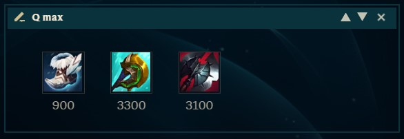
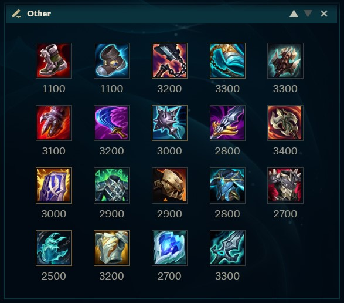
- Chuỳ hấp huyết: counter các sát thủ, hoặc những tướng đánh gần ít HP. Các trang bị thành phần của item này rất mạnh, phù hợp cho việc snowball đầu game.
- Chuỳ phản kích: giữ chân các tướng đánh xa
- Búa rìu sát thần: out dmg 2 món trên nếu như đối phương mua nhiều HP.
Udyr cần thêm một món huyền thoại có AD để có đủ dmg. Lựa chọn số 1 với mình ở phiên bản hiện tại là Rìu đen. Rìu mãng xà: phù hợp cho Udyr top với hút máu, nhiều AD, clear lính, giúp 1v1 và đẩy lẻ tốt hơn.
Theorycrafting 13.10
Như mọi người đã biết, phiên bản 13.10 làm lại rất nhiều item cho nhiều lớp tướng khác nhau. Bên dưới đây là các build mình nghĩ ra/tổng hợp lại. Các build này rất mạnh, nhưng mình chưa có thời gian "điều tra" nên không dám ghi chung với phần bên trên.
Một vài quan sát về 13.10 (21/5/2023):
SoloQ
- Rework đồ ADC là nerf. Những tướng không bị ảnh hưởng là những tướng mạnh nhất đường dưới: Ezreal và Karthus
- Combo Lucian + Milio vẫn OP. Lucian Nami cũng ok
- Talon và Rengar là trùm SoloQ. 2 vị tướng này trước đây rất phụ thuộc vào Youmuu để tiếp cận. Bây giờ, Youmuu trở thành đồ thần thoại, giúp cả 2 có thêm 1 ô đồ. Vấn đề là Talon và Rengar, nhưng rất tiếc là trên các trang mxh, mọi người lại cho rằng vấn đề là do Youmuu. Nếu Riot chiều ý dư luận và nerf Youmuu, sẽ ảnh hưởng đến những sát thủ khác vốn đang cân bằng
- Graves cũng trở thành một trong những vị tướng mạnh nhất game, nhưng build của Graves đa dạng và bản thân Graves cũng khó chơi hơn
- Bùa nguyệt thạch quá yếu so với mình tưởng tượng. Sona và Soraka bị ảnh hưởng lớn nhất
- Tam hợp kiếm + Búa tiên công rất mạnh
Pro
- Milio 100% ban/pick nếu không bị Riot đả động trước khi Summer Split bắt đầu. Các tướng phối hợp tốt với Milio cũng được ưu tiên cao (Jinx, Kog'maw, Lucian,...)
- Graves cũng rất mạnh, nhưng có xuất hiện hay không thì còn phụ thuộc vào việc các team có khám phá ra được trong 1 tuần hay không
- Thay đổi về tốc độ của wave ảnh hưởng rất lớn tới việc set up dive
- Mid sẽ bị thống trị bởi pháp sư, do combo Lam ngọc + Thị trường tương lai
- Kalista được buff rất mạnh vào 13.11, không rõ sẽ ảnh hưởng pro play như thế nào
Ezreal 13.10
ADC mạnh nhất game. Tất cả build đều được buff.
Bảng ngọc
Mặc định là Chinh phục. Nếu build tập trung nhiều vào đánh thường thì có thể đổi sang Sẵn sàng tấn công.
Nhiều người sử dụng nhánh phụ Áp đảo để lấy Thợ săn tài tình, giảm hồi chiêu Thuỷ kiếm. Điểm yếu của nhánh này là cần có mạng đầu game để stack. Theo mình, nhánh Pháp thuật vẫn ổn định nhất.
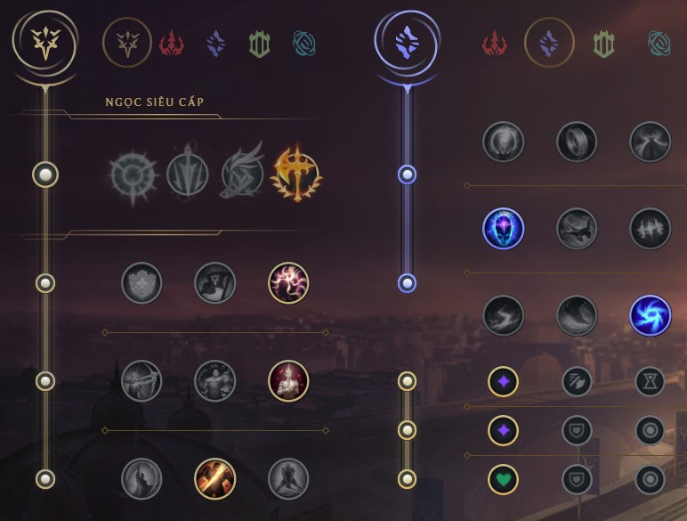
Item
Crit
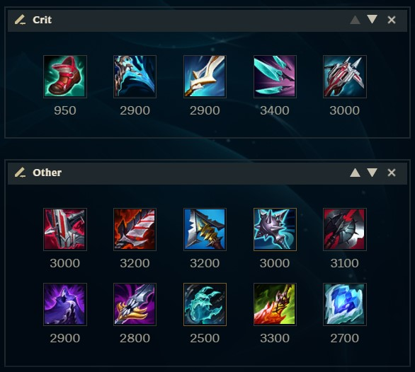
Phù hợp cho các game nhiều melee/tank, tận dụng thêm các đòn đánh thường, so le với Q.
Nỏ thần Dominik bây giờ cường hóa sát thương hỗn hợp. Nếu mua Navori, Ezreal không cần hồi chiêu từ Serylda và có thể thay thế bằng Nỏ thần.
Sát lực
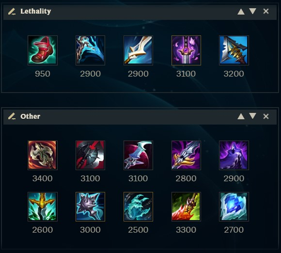
Build gây nhiều dmg nhất trên Q. Dùng build này khi bạn chỉ poke trong combat. Youmuu là món cho nhiều sát lực và AD nhất game. Tình hình có thể thay đổi trong bản kế tiếp (13.11).
Liandry (???)
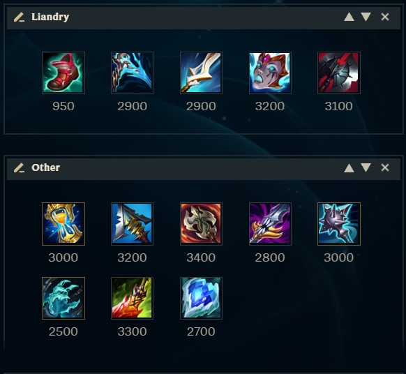
Trong soloQ, đôi lúc team pick một đội hình full AD. Đây là tình huống đặc biệt, và cũng là duy nhất, để chúng ta sử dụng Liandry, đa dạng hoá nguồn dmg trong đội hình. Đương nhiên, các món Xuyên giáp, Sát lực như Serylda sẽ yếu hơn trong build này.
Bởi tình huống trong game là team nhiều AD, bạn có thể lên cả Rìu đen để giảm giáp, giúp tăng dmg cho cả team.
Tam hợp kiếm
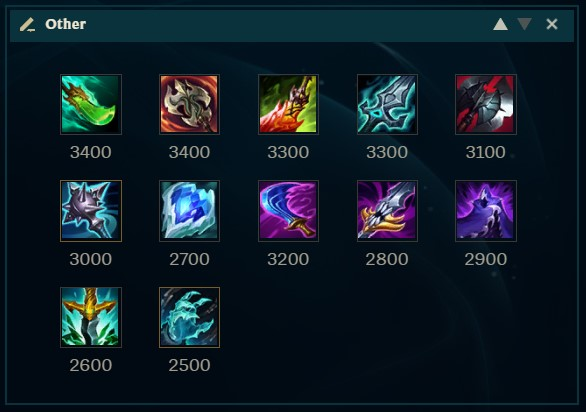
Đây là build duy nhất mà Ezreal có thể mua HP sớm, tốt khi gặp các đội hình lao vào. Ví dụ như Kennen, Viego, Ahri.
Gnar 13.10
Một trong những tướng blind top tốt nhất soloQ. Tuy nhiên, hiện có nhiều người chỉ biết tới 1 build dành cho Gnar.
Bảng ngọc
Mặc định là Bước chân thần tốc. Yếu tố quan trọng nhất trong lối chơi của Gnar là spacing, và đây là ngọc tốt nhất cho yếu tố này.
Nhánh phụ của Gnar không quá cứng nhắc. Nếu chưa chơi quen, có thể lấy nhánh màu đỏ, nhánh mạnh nhất khi đi lane.
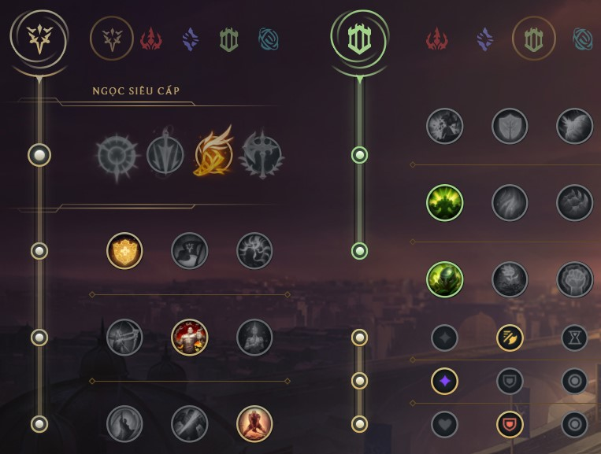
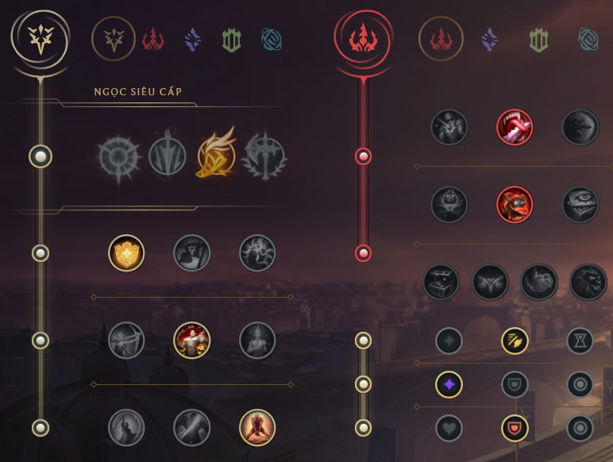
Item
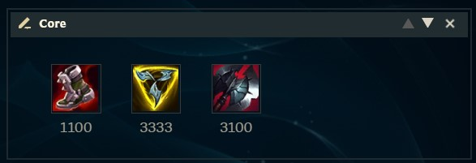
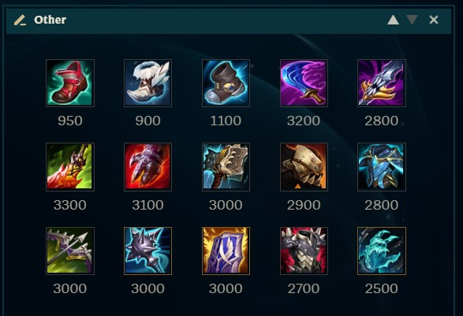
Tam hợp kiếm là item thần thoại nhiều dmg nhất dành cho Gnar. Lượng tốc độ chạy từ món đồ này khiến Gnar thả diều tốt hơn, và cực kì khó chịu ở 2 đường cánh. Ngoài ra, Mega Gnar là vị tướng có AD cơ bản cao nhất game, nên đương nhiên có thể sử dụng tốt item này. Rìu đen hiện tại là một trong các item huyền thoại mạnh nhất dành cho đấu sĩ. Trong các lane mà Mini Gnar mạnh hơn Mega Gnar (Irelia, Garen, Olaf,...), có thể xem xét rush Rìu đen và Giày Ionia.
Điểm chung của những tướng này là không thể thả diều và luôn luôn thắng một khi chúng all-in, việc hồi chiêu nhanh hơn giúp bạn né được các pha all-in này, tiếp tục lối chơi poke.
Nếu như team bạn có quá ít sát thương vật lý, có thể cân nhắc lên các món khác.
Nếu như bạn mắc sai lầm trong lane và thua nặng, đừng mua Tam hợp vì bạn không thể đẩy lẻ được nữa, do không thể solo thắng ở đường cánh. Rìu mãng xà là trang bị mạnh nhất khi Gnar thua lane, cung cấp hút máu, AD miễn phí và hồi chiêu, giúp Gnar trụ đường tốt.
Khi thua, tốt nhất là nên mua trang bị tank để hỗ trợ cho team, và không món nào khác làm điều này tốt hơn Giáp vai nguyệt thần. Giày cuồng nộ bù cho lượng AS mất đi từ Tam hợp.
Graves 13.10
Một trong những tướng mạnh nhất game ở thời điểm hiện tại, do tất cả build đều được buff, trừ Negan nhiều khả năng đã bị xóa sổ :(
Có quá nhiều lối build mới được mở ra trong bản này, nên mình sẽ chỉ nói về 2 build mạnh mà mình đã thấy ở thời điểm hiện tại.
Bảng ngọc
Bước chân thần tốc là ngọc then chốt ổn định nhất cho cả Graves đi lane và đi rừng. Nếu bạn chơi Graves sát lực, có thể thay thế bằng Sốc điện hoặc Đòn phủ đầu.
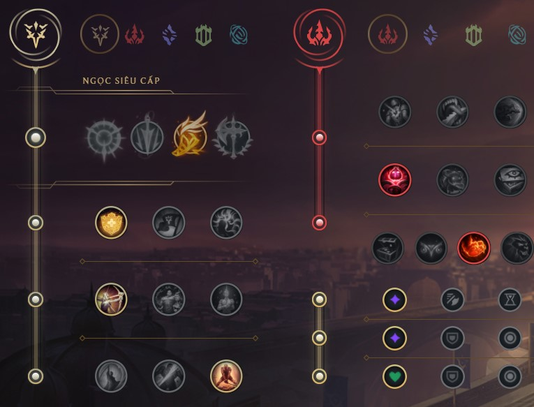
Do game hiện tại đặt nặng việc kiểm soát mục tiêu, mình đánh giá rất cao Thuỷ thượng phiêu, không chỉ cho Graves mà hầu như tất cả các tướng đi rừng.
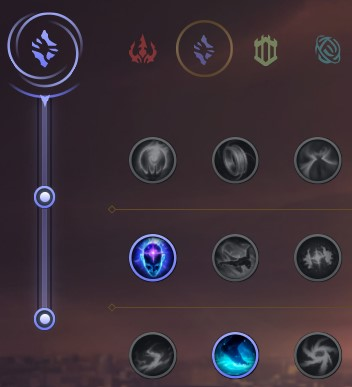
Với các build không phải Sát lực, có thể cân nhắc nhánh Kiên định để lấy chống chịu miễn phí.
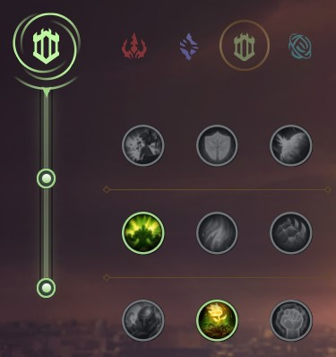
Item
Do cơ chế reload, Graves không nên lên quá nhiều AS. Các bạn có thể thấy mình không đề xuất Giày cuồng nộ trong build nào cả. Nếu như cả Tabi và Giày thuỷ ngân đều không phù hợp, có thể giữ Giày 1 và ưu tiên lên đồ lớn.
Mọi người sẽ thấy sự vắng mặt của một trong những món đồ phổ biến nhất trên Graves, Kiếm Âm u. Theo mình, item này ngoài tương tác khá mạnh với Mắt thây ma thì không có nhiều tác dụng lắm. Chỉ số của Kiếm âm u quá yếu, và tất cả các build của Graves đều cần khoảng 2 item để bắt đầu mạnh. Nếu như đã quen mua Kiếm âm u thì các bạn có thể mua, nhưng mình cực kỳ không khuyến khích.
Sát lực
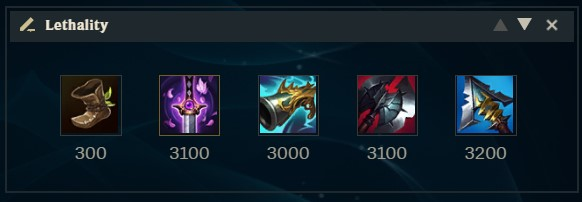
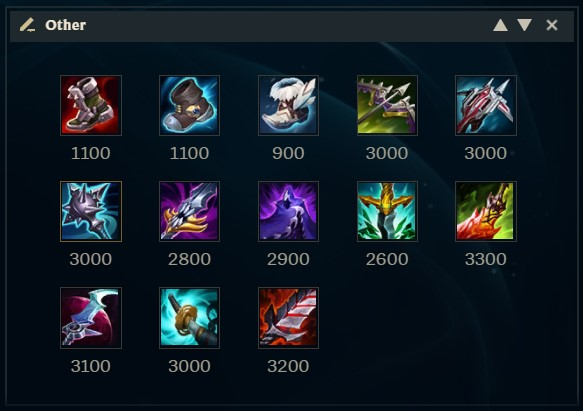
13.10 buff 2 item rất quan trọng cho Graves sát lực là đồ thần thoại và Súng hải tặc. Với Youumu mới, Graves không cần phải lên giày mà vẫn di chuyển rất nhanh trong rừng, và combo burst của Graves gây cực kỳ nhiều dmg.
Đấu sĩ
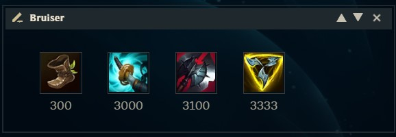
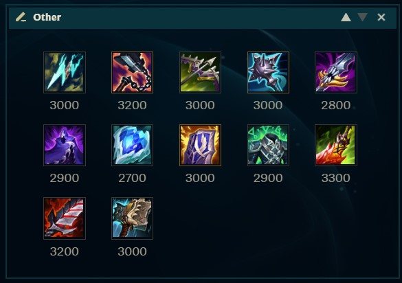
Mọi người biết nhiều đến build này thông qua Chùy hấp huyết. Ở bản 13.10, Graves còn có thể sử dụng Tam hợp kiếm, dmg cao hơn và tăng nhiều tốc độ chạy, chỉ số rất quan trọng cho Graves. Graves cũng có chỉ số AD cơ bản rất ấn tượng.
Theo quan điểm cá nhân của mình, Graves cần lên Phong thần kiếm (jg)/Dao điện Statikk (lane) và Rìu đen trước đồ thần thoại. Bó tên ánh sáng giúp Graves dọn lính và rừng rất nhanh, và Graves có thể full stack Rìu đen bằng chỉ một đòn đánh crit.
Jhin 13.10
Vị tướng hưởng lợi rất lớn từ xu hướng giảm AS, thêm AD trong các món đồ mới.
Bảng ngọc
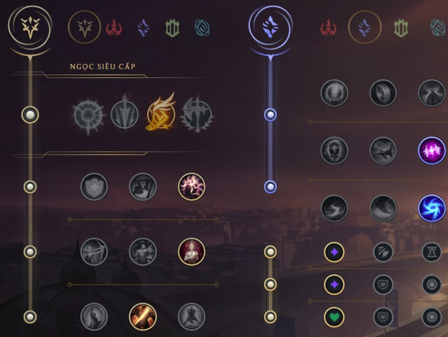
Item
Gặp tướng yếu máu
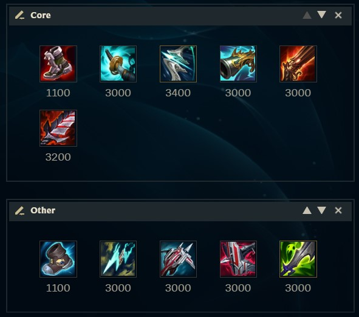
Phong thần kiếm quá phù hợp với lối chơi của Jhin, giúp đánh thường poke, thả diều, hỗ trợ đẩy lính, cung cấp nhiều AD.
Đổi sang Dao điện Statikk trong các lane cần đẩy lính nhanh. Cung phong linh và Súng hải tặc được buff rất mạnh trong bản 13.10, giúp combo với nhát 4 có khả năng kết liễu rất mạnh và bất ngờ. Huyết kiếm vừa cung cấp hút máu, vừa cho nhiều AD nhất game. Lại một item được làm lại theo hướng vô cùng phù hợp cho Jhin.
Gặp tướng nhiều máu
Combo Vô cực kiếm và Huyết kiếm cung cấp quá nhiều AD ở món 3. Bổ sung thêm Nỏ thần Dominik nếu cần xuyên giáp.
Nhìn chung, Jhin là một trong các tướng AD yếu nhất khi đối đầu với tank. Cố gắng tránh những trường hợp này =)))
Miss Fortune 13.10
Điểm mạnh lớn nhất của MF là có đa dạng build, có thể là nhiều nhất trong tất cả ADC, và một vài biến thể có thể được chơi ở vị trí hỗ trợ.
Bảng ngọc
Sẵn sàng tấn công là lựa chọn tốt nhất cho Crit MF. MF thông thường không cần đến 6 AA để hạ các carry đối phương.
Bảng ngọc chính cho build Sát lực, tập trung vào poke và chiêu cuối.
Bảng ngọc dành cho MF AP.
Có một con tướng miễn nhiễm với poke ở đường dưới, đó là Jhin (Bước chân thần tốc, Giày + 4 bình máu, MS cao,...). Đặc biệt trong lane này, chuyển sang Đòn phủ đầu và chơi full scaling (tập trung hoàn toàn cho mid/late game).
Item
Crit
Dao điện Statikk đẩy nhanh tốc độ đẩy lính cho MF, giúp MF đè lane tốt hơn. Cho những game cần thêm dmg (gặp nhiều tank), có thể đổi sang Móc diệt thủy quái.
Khi có đủ AS, Navori có thể cho MF Q mỗi 1.5s. Item này out DPS Vô cực kiếm.
Nguồn ảnh: mnogi
Sát lực
Kiếm ma Youmuu cung cấp quá nhiều MS, cho phép ta bỏ qua cả Giày và tiết kiệm ~1k vàng cho đồ lớn. Rìu đen stack trên từng phát đạn của chiêu cuối.
Mặc dù là build Sát lực, Huyết kiếm là item không thể thiếu, do cung cấp quá nhiều AD và hút máu.
AP
Bản 12.21 buff AP scale của chiêu E. Build này có thể chơi ở cả vị trí carry và hỗ trợ. Dao điện Statikk: Khi chơi MF AP ở vị trí carry, rất khó để farm vào đầu game do không có AD. Dao điện Statikk là món đẩy lính mạnh nhất early game, giúp MF farm ổn định, trước khi bắt đầu mua AP để poke. Nội tại của Dao điện scale với AP, và đương nhiên sẽ kết hợp tốt với các món AP mà MF mua, giúp MF vừa đẩy lính nhanh, vừa poke mạnh bằng E, mà vẫn có một chút sát thương đánh thường và sát thương Bão đạn khi cần.
Nếu bạn lựa chọn rush Dao điện, nên lên 4 điểm W trước khi max E. Động cơ vũ trụ nếu cần thêm slow, và Trượng Hư vô nếu cần dmg. Mũ trụ nguyền rủa: chỉ mua khi đối phương có rất nhiều HP (Sion, Cho'gath, Zac,...). Lưu ý: tác dụng chính của build AP là đa dạng hoá nguồn dmg, chỉ sử dụng khi team không có AP/khi đi hỗ trợ.
Senna 13.10
Một trong những bài viết lạ nhất cho cả trang web này.
Bảng ngọc
Bước chân thần tốc là lựa chọn ổn định nhất, phù hợp với cách trade của Senna trong lúc đi lane và cách giữ vị trí, gây dmg trong phần còn lại. Với những người mới chơi Senna thì nên lấy ngọc này 100% game.
2 ngọc then chốt còn lại (không phải Chinh phục) phát huy tác dụng trong một vài trường hợp rất nhất định.
Senna scale quá tốt với AD (do nội tại), gần như luôn luôn lấy nhánh Pháp thuật để có nhiều AD nhất.
Nhánh phụ Kiên định dành riêng cho build enchanter, sẽ nói đến ở phần sau.
Item
Giày thép gai: Từ khoảng 2 năm trở lại, tất cả Senna mặc định lên Giày bạc.
Lý do lớn nhất mà mọi người có thể nghĩ ra là chạy nhanh để "giữ vị trí, né chiêu".
Không có AD nào không cần giữ vị trí, tại sao không có AD nào khác lên Giày bạc?
Thay vì lên thêm 15 MS và tin vào khả năng phản xạ của bản thân, thì một cách tư duy tốt hơn là lên thẳng giáp, để ngay cả khi trúng chiêu vẫn không nhận nhiều dmg.
Mình rush giày 2 trong tất cả game Senna, vì các pha trade đầu game với Senna hầu như chỉ dừng lại ở farm linh hồn, nên mình muốn MS và chống chịu để lui về an toàn nhất.
Đối với một vài game nhất định, Senna sẽ cần lên Giày thuỷ ngân.
Fasting Senna
2 món carry tốt nhất cho Senna là Móc diệt thuỷ quái và Guinsoo. Cố gắng có Huyết kiếm trong build hoàn thiện, do lượng AD quá lớn mà item này mang lại.
Support Senna
Solari: giải thích tương đối dài dòng. Tất cả mọi người đều biết thừa rằng điểm yếu lớn nhất của Senna là quá mỏng, cực kỳ dễ chết khi bị engage. Hơn nữa, do thường được đánh ở vị trí hỗ trợ (cho 1 AD khác), cả 2 đều trở thành miếng mồi cho đối phương. Chỉ cần thua một chút, và để AD đối phương có lợi thế, Senna và AD của mình sẽ thành mục tiêu dive liên tục.
Hầu như các tướng lao vào đều không thể vượt qua lớp khiên của Solari. Thời gian hồi 90s ngắn hơn đa số chiêu cuối của các tướng ở giai đoạn 1 đồ. Cộng thêm 200 HP, 30 giáp và 30 kháng phép, Senna trở nên rất khó bị hạ gục, nhưng vẫn gây sát thương tốt nhờ lượng sát thương cơ bản rất cao ở chiêu Q và nội tại. Một điểm nữa cần lưu ý là Solari khá giống với các lựa chọn Bước chân thần tốc cũng như Giày thép gai, đều giảm thiểu thiệt hại và rủi ro khi Senna bước lên trade trong lane để farm linh hồn. Guinsoo: Giả sử như đối phương không có tướng lao vào, hoặc bạn đang có quá nhiều lợi thế và thực sự không cần đến Solari, thì có thể lựa chọn item này để gây nhiều DPS nhất trong combat. Swap sang Vô cực kiếm ở món 6. Gươm Suy Vong: Do không được farm giống như các AD khác, Senna cần lên những món đồ mạnh nhất 1 cách độc lập. Gươm Suy Vong không chỉ gây dmg ổn định, mà còn cung cấp hút máu, tương tác rất tốt với Solari.
Enchanter
Build này lợi dụng tương tác rất lỗi giữa Suối nguồn sinh mệnh và Vọng âm Helia.
- Q của Senna kích hoạt Suối nguồn sinh mệnh trên mục tiêu
- AD đánh thường mục tiêu
- Suối nguồn sinh mệnh hồi máu AD và kích hoạt Helia
- Cả Senna và AD liên tục đánh thường mục tiêu, và liên tục kích hoạt HeliaLư hương sôi sục và Trượng lưu thủy được giảm giá xuống 2100g, giúp Senna đạt các ngưỡng sức mạnh rất sớm.
Câu hỏi thường gặp: Tại sao lại không mua...
Sát lực? Troll :). Sát lực tăng giá trị theo level, và không phải là lựa chọn dành cho vai trò có level thấp nhất trong game. Q của Senna có thời gian hồi rất lâu nếu thiếu AS, nên Senna cũng không hưởng lợi quá nhiều từ việc mua Sát lực. Đại bác liên thanh? Vô dụng. Nếu farm linh hồn đúng cách, Senna rất dễ dàng đạt tầm đánh 650+ vào cuối game. Dmg và on-hit luôn là những lựa chọn tốt hơn, thay cho việc tăng tầm đánh mỗi 8s (100 stack Tích Điện). Trái tim khổng thần? Mình không còn lời nào để nói :(. Học cách người Hàn chơi game, không phải cách người Hàn build. Still <3 Keria.
Zeri 13.10
Build đấu sĩ Zeri (hồi mói ra mắt) đã quay trở lại để thay thế cho Nỏ tử thử
Bảng ngọc
Nhánh phụ Kiên định tăng khả năng chống chịu cho Zeri.
Item
Quan trọng nhất trong build là Tam hợp kiếm, cho Zeri nội tại Thủy kiếm, AS và HP. Các món còn lại mua tùy theo thế trận, nhưng nên có một món hút máu trong build cuối cùng.